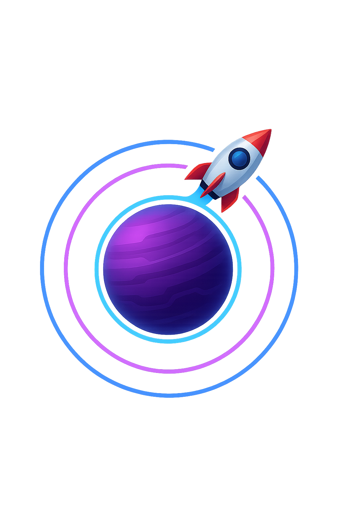

PULSE
ORBIT

🚀 Pulse Orbit – Dein Puls zählt. Dein Orbit entscheidet.
Tauche ein in die kosmische Hölle der Gravitation!
In Pulse Orbit steuerst du ein wendiges Raumschiff durch gefährliche Umlaufbahnen. Per Fingertipp wechselst du zwischen Umlauf und Vorstoß – aber Achtung: Asteroiden, Laserfallen und bizarre Bosse lauern überall.
🎮 Arcade-Gameplay mit modernem Twist
- 🌌 Einzigartiger Orbit-Mechanismus statt klassischem Scrolling
- 🧠 Reflexe & Timing entscheiden über Sieg oder Zerstörung
- 👾 Bossfights, Power-Ups & wechselnde Herausforderungen
- 🪙 Münzen sammeln, Schiffe freischalten, Skins verdienen
- 📺 Optional: Werbung schauen für ein Extra-Leben
"Pulse Orbit fühlt sich an wie ein Mix aus Geometry Wars, Asteroids und einem Taktpuzzle im Weltall."
🕹️ Für wen ist Pulse Orbit?
Du liebst schnelle Reaktionen, stylische Retro-Vibes und ein Gameplay, das man "easy to learn, hard to master" nennt? Dann ist Pulse Orbit dein neues Suchtspiel für Zwischendurch und lange Abende.
📱 Verfügbar für iOS
Aktuell im TestFlight – sei einer der ersten Testpiloten und flieg durch die Orbit-Hölle!
- 👉 Jetzt mitmachen & Feedback geben!
- 🧪 Testflight-Link auf Anfrage – kontaktiere uns einfach über info@hildel.com